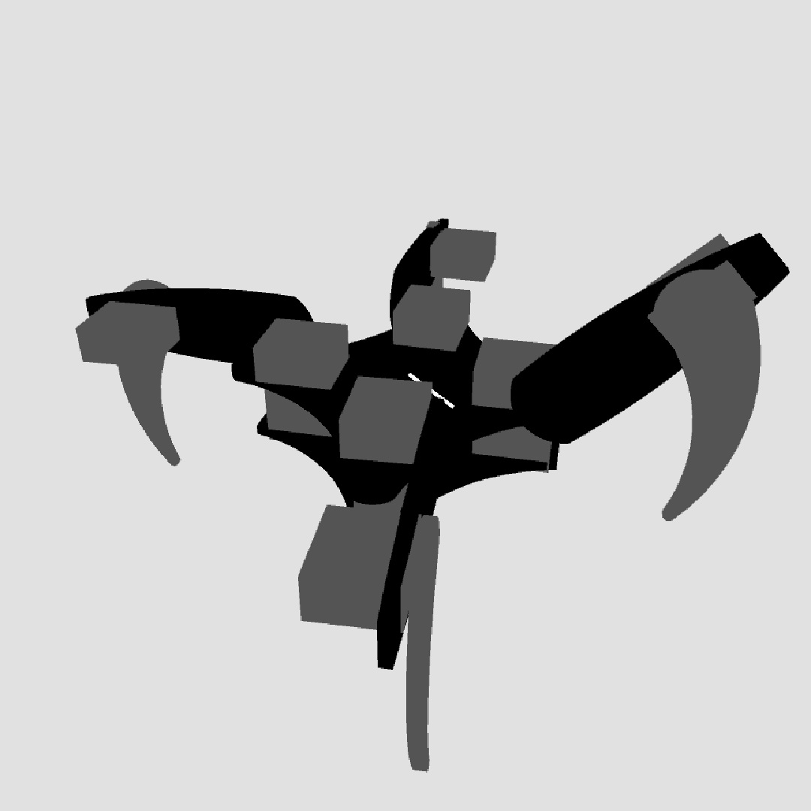

Random-walk
By Omar Essilfie-Quaye
Settings
Random Walk
A random walk is a process that describes a series of random steps that when put together create a random path. One of the most common examples of a random path is the path that a molecule traces through a gas or a liquid. This is known as Brownian Motion .
Random walks can be defined in a continuous space, such as in Brownian motion, or it can be defined on a strict lattice. The motion of a particle on a lattice is restricted to neighbouring lattice nodes. At each node a random direction is chosen to travel in, even if this node has already been visited.
Self Avoiding Walk
The key difference between a random walk and a self avoiding walk is that the self avoiding walk never goes to the same node twice. There is no known method or formula to calculate every self avoiding walk for a given lattice or to calculate a self avoiding walk that travels through every point in the lattice.
A self avoiding walk that travels through every point in the lattice is also known as a space filling walk. It is a computational hard problem to solve for this. One possible means of searching for a solution numerically is the pivot algorithm.
Pivot Algorithm
The pivot algorithm is used to take an existing random walk and changes it to get a new one. This is done using a sequence of steps as describe below. These steps can be repeated as many time as desirable to get the required outcome. It should be noted that a common initial configuration for the walk is a straight line.
- 1) Prepare a random walk on the lattice that has N steps.
- 2) Randomly pick a location along the walk to act as a Pivot Site.
- 3) Select a new random rotation operation. This will be lattice dependent.
- 4) Apply this rotation operation to all points after the selected Pivot Site.
- 5) If the rotated part of the chain overlaps with the rest of the chain reject the rotation. If there is no overlap accept the rotation.
- 6) If reached the number of desired iterations break. Otherwise return to step 2.

Quadruped
Cooper-pair-box